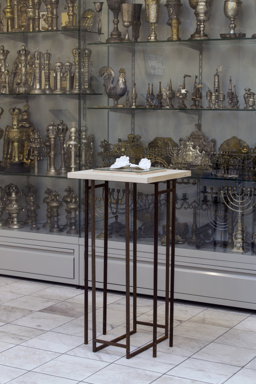
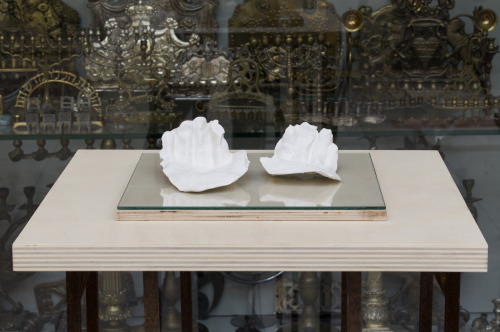
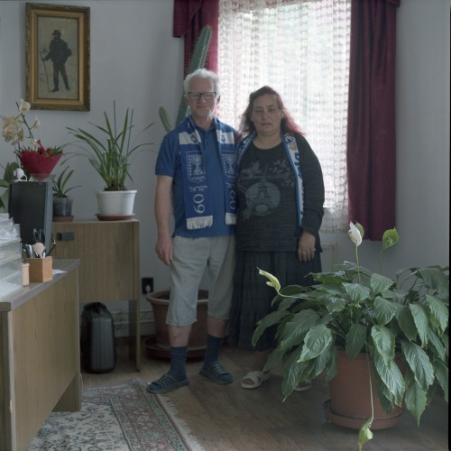
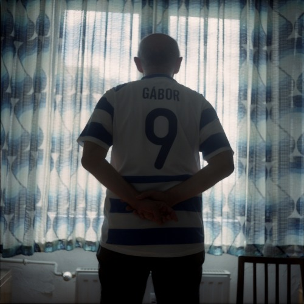
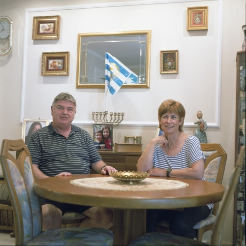
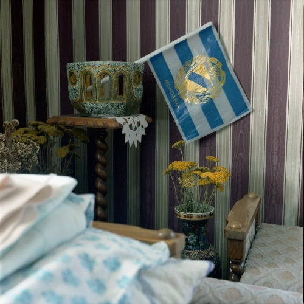
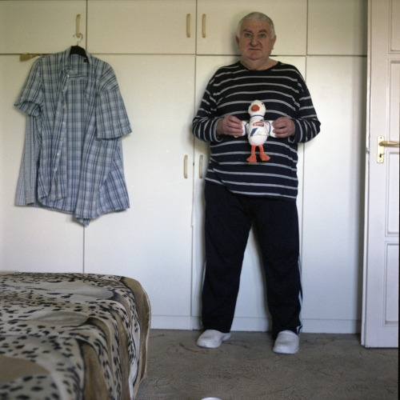
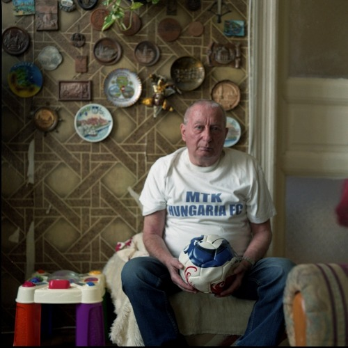

A mauthauseni magyar emlékmű a Kádár-korszak első, holokauszt-emlékezethez kapcsolódó, állami finanszírozású képzőművészeti projektje. A hatvanas években még két hasonló vállalkozásra került sor: közös jellemzőjük, hogy külföldön (Mauthausen, 1964; Auschwitz, 1965), vagy legalábbis külföldi célközönség számára hozták létre azokat (A magyar képzőművészek a fasizmus ellen, Magyar Nemzeti Galéria – a Fédération Internationale des Résistants kongresszusának alkalmából). Mindhárom projekt képzőművészeti eszközökkel volt hivatott bemutatni a „fasizmus elleni harcot”, valamint annak múltbeli és jelenkori hőseit: az országot irányító kommunistákat.
A Comité International de Mauthausen felkérése nyomán már 1955-ben döntés született „a fasizmus áldozatainak emlékére” egy emlékmű felállítására, a két méter magas emlékoszlop azonban csak terv maradt. 1957-ben a frissen megalakult (a Magyar Partizán Szövetségbe betagozódó) Nácizmus Üldözötteinek Bizottsága vette kezébe az ügyet. Gyűjtést indítottak, majd 1958-ban egy hat és fél méter magas bronz szobor (ma lappangó) makettjének elkészítését Farkas Aladárra bízták.
1959-ben a Képzőművészeti Alap meghívásos pályázatot írt ki hat szobrász részére. A zsűri a Magyarországon élő görög emigráns, Makrisz Agamemnon tervét választotta, Kiss István, Martsa István, Somogyi József és Laborcz Ferenc munkáival szemben (utóbbi két tervet is készített, míg Kerényi Jenő nem vett részt a pályázaton). A folyamatosan emelkedő költségek, valamint bürokratikus és diplomáciai akadályok miatt a felállítás időpontja egyre tolódott, az emlékművet végül 1964-ben avatták fel.
Véri Dániel
/
The Hungarian Memorial in Mauthausen had been the first state-funded fine arts project related to the memory of the Holocaust in Communist Hungary. Two more such endeavours took place in the 1960s: they share the common characteristic of being produced abroad (Mauthausen, 1964; Auschwitz, 1965) or at least for a foreign audience (The Hungarian Artists Against Fascism, Hungarian National Gallery, 1965 – on the occasion of the congress of the Fédération Internationale des Résistants). All three projects intended to showcase through artistic expression the “fight against Fascism” and its heroes in past and present times, namely the country’s Communist leadership.
Upon the request of the Comité International de Mauthausen it was decided as early as in 1955 to erect a monument “for the memory of the victims of Fascism”, but the two meters large memorial column remained only a plan. In 1957 the newly founded Committee of the Persecutees of Nazism (integrated into the Hungarian Partisan Association) took the initiative. They started a fundraising campaign and in 1958 commissioned Aladár Farkas to create a (currently missing) model for a six and a half meters large bronze sculpture.
In 1959, a by invitation only contest was announced by the Fine Arts Fund for six sculptors. The jury selected the plan created by Agamemnon Makrisz, a Greek émigré sculptor living in Hungary, forgoing works by István Kiss, István Martsa, József Somogyi and Ferenc Laborcz (the latter created two plans, whereas Jenő Kerényi did not take part in the contest). Due to the continuously increasing costs, as well as bureaucratic and diplomatic obstacles the date of the erection of the monuments had been repeatedly delayed; finally, the monument was inaugurated in 1964.
A munkám kiindulópontja a hatvan évvel ezelőtt, 1958-ban megjelent “A magyarországi fasizmus zsidóüldözésének bibliográfiája 1945-58” című kötet, melyet Geyer Artúr budai főrabbi állított össze. Kisantal Tamás “Holokausztirodalom Magyarországon” című tanulmányában leírja, hogy 1945 után néhány éven keresztül kifejezetten nagy számban láttak napvilágot a háborús tapasztalatokról, az egyéni szenvedésekről és az országot ért sorscsapásokról szóló művek. A megjelent szövegek mennyiségi arányát jól mutatja Geyer Arthúr 1958-ban kiadott, a zsidóüldözésről szóló szövegeket összegyűjtő bibliográfiája, amely több mint kétszáz tételt tartalmaz az 1945 és 1958 közötti időszakból.
Vizsgálódásom alapját a kiadvánnyal történt váratlan esemény képezi, miszerint megjelenése után azonnal betiltották, sőt minden példányát bezúzták. Csak az Országos Széchényi Könyvtárban és a fővárosi Szabó Ervin Könyvtár központjában maradt egy-egy példány zárolva, melyeket a mai napig nem lehet kikölcsönözni, csak a könyvtár olvasótermében tanulmányozható.
A könyv előszavában Schreiber professzor, az Országos Rabbiképző Intézet igazgatója megjelöli a mű pontos célját, vagyis a magyarországi zsidóság fasizmus okozta tragédiájának adatainak felkutatása és történetének hiteles leírása.
A Geyer-féle bibliográfia keletkezéstörténete, illetve annak utóélete szimbolikusan és egyfajta esettanulmányként is értelmezhető. Az abban felmerülő “csomópontok”, rétegek és ellentmondások képezik a vizualizáció hátterét. Munkám egy kötött installációs rendszer szerkezetébe épül bele, amelyet a Magyar Zsidó Múzeum és Levéltár kiállítóterének egy szegmense határoz meg. A kiállított művek egyfajta mindmap-ként, laza, asszociatív hálóként jelennek meg, áttételesen rejtett jelentésekre utalva. Az installáció értelmezési keretét a könyvolvasók adják. Az azokon elhelyezett tárgyak, töredékek mindegyike az egyetemes írásbeliség kultúrájára, a nyomtatott szöveg hatalmára, annak elpusztíthatatlanságára reflektál vagy hozza játékba azok asszociációs terét. Művészeti tevékenységen egyik központi kérdése a tudás megőrzése, rendszerezése és az ehhez kapcsolódó konstrukciók – könyvtár, könyvespolc, ezek műalkotássá formálása.
/ The point of departure of my work is a book titled The bibliography of the fascist persecution of the Jews 1945-1958, which was published 60 years ago in 1958 and its editor was Artúr Geyer chief rabbi of Buda. In his study Holocaust literature in Hungary, Tamás Kisantal writes that after 1945 there were a couple of years while a large number of works was published dealing with experiences of the war, personal sufferings and the strokes of fate afflicting the country. Artúr Geyer’s bibliography from 1958 collected texts about the persecution of Jews and it shows the volume of the published texts very well as it contains more than 200 elements from the period of 1945 and 1958.
The basis of my analysis is the unexpected event that the book – right after being published – was banned and its copies were smashed. There were only two copies left – one in the National Széchenyi Library and one in the Metropolitan Ervin Szabó Library, both in the restricted section – that can’t be borrowed up until today, they can only be read in the reading room of the library. In the preface of the book, Professor Scheiber, the director of the Budapest University of Jewish Studies, declared the exact goal of the work, that is, to research the data of the tragedy that was caused to the Hungarian Jewry by fascism and to document its history in a trustworthy way.
The genesis and the afterlife of Geyer’s bibliography can be interpreted both symbolically and as a sort of case study. The “junctions”, layers and ambiguities appearing in it form the background of the visualisation.
My work is built in the structure of a fixed installation system that is determined by a segment of the exhibition space of the Hungarian Jewish Museum and Archives. The exhibited works appear as a kind of mindmap, a loose, associative network, referring to some indirectly hidden meanings. The interpretative framework of the installation is given by the readers of the book. The objects, fragments placed on them all reflect on the culture of the universal literacy, the power and imperishability of the written texts and brings their association map into play. The central question of my artistic practice is the preservation, systematization of knowledge and constructions connected to them – the library, the bookshelf and their transformation to artworks.
2015-ben költöztünk a második kerületi Fillér utcába. A lakás előző tulajdonosa S.J. 2012-es halál óta a lakás üresen állt, úgy, ahogyan ő hagyta. Mivel nem voltak rokonai, az ingóságok az államra szálltak. Semmihez nem nyúlhattunk, amíg a Nemzeti Vagyonkezelő értük nem jött és el nem vitte a leltárba vett dolgokat. Szinte teljesen kiürült a lakás. Ami maradt: pár törött bútor, néhány fotó, pár érdektelen keretezett nyomat, rengeteg képeslap és hatalmas kosz.
A hálószobában egyetlen egy kép maradt a falon. Egy kifakult fotó, mely emlékeim szerint az athéni Akropoliszt ábrázolta. Kis vékony aranyszínű keretben, üveg mögött. Leakasztottam a falról, hogy kidobjam. Egyszer csak észrevettem, hogy a kép hátán van egy pecsét és a pecsét körbe van fóliázva, a fólia meg celluxszal rögzítve.
Megnéztem a feliratot és legnagyobb megdöbbenésemre ez állt rajta:Genehmigt Von der Reichsleitung der NSDAP N.304 CARL LANGGUTH Kunstverlag POSEN-BERLIN SO 36
Nem értettem mit keres a Nemzetszocialista Német Munkáspárt, a nácik hivatalos pecsétje egy Akropoliszt ábrázoló fotón. Mindez a Fillér utcában, az új, leendő otthonunkban. Szétszedtem a képkeretet, az üveget, a fotót és akkor vettem észre, hogy a karton, ami a kép hátoldalául szolgált valójában egy hatalmas Adolf Hitlert ábrázoló sokszorosított grafika.
Hogy kerülhetett oda? Ki csinálta a képet? Ki volt S.J.? Kikkel lakott egy házban? Ez a rövid kutatás nem fogja megadni a választ a kérdésekre, de megpróbál a történet minden egyes elemének utánamenni és bemutatni azt. Hamar világossá vált, hogy leginkább, mint valami katalizátor fog működni a talált kép, mely beindítja a házban lakók emlékeit és sikerül bemutatni, hogy egy kis háromlakásos budai ház mennyi történetet, drámát és érdekességet rejt.
/ We moved to the Fillér street of the second district in 2015. Since the death of its previous owner, S.J. in 2012, the flat was there, empty, exactly the way he left it. As he had no relatives, his movable properties were left to the state. We couldn’t touch anything until the National Asset Management came to collect his things and recorded them to the inventory. The flat became basically empty. What was left: some broken furniture, a couple of photos, some indifferent, framed prints, plenty of postcards and a lot of dirt.
There was one picture left on the wall of the bedroom. A discoloured photo that, as I remember, pictured the Acropolis. In a thin, golden-coloured frame, behind glass. I unhung it from the wall so I could throw it away. I realized only then that there’s a stamp at the back of the photo and the stamp is wrapped around, and the wrapping is tied down with cellux.
I looked at the caption and to my greatest surprise, I found this:
Genehmigt Von der Reichsleitung der NSDAP N.304 CARL LANGGUTH Kunstverlag POSEN-BERLIN SO 36
I didn’t understand what the stamp of the National Socialist German Workers’ Party has to do with the photo of the Acropolis. All this in the Fillér street, in our new, prospective home. I disassembled the frame, the glass and the photo, and then I realized that the pasteboard functioning as the back of the photo is actually a huge multiplied graphic portraying Adolf Hitler.
How could it get there? Who made the photo? Who was S.J.? Who did he live with in the same building? This short research won’t provide an answer to all these questions but it will try to go after all the elements of this story to present them. It became clear very fast that the photo would mostly function as a catalyst that inspires the residents of the building to remember, and it will show how many stories, dramas and curiosities can be hidden in a small building with three apartments in Buda.
Documentation of the whole project can be found here.
Nagymamám szinte mindig letompította a hangját, amikor kiejtette a zsidó szót. Saját lakásában is suttogva mondta ki, ezáltal a hozzákapcsolódó jelentéstöbblet egyszerre lett elrejtve és nyomatékosítva. Halála után a lakás teljesen üressé vált, elvesztette eredeti funkcióját, viszont továbbra is őrizte a családi hagyatékot, amit sűrűn látogattam és tanulmányoztam. Egyik alkalommal összetalálkoztam és beszélgetni kezdtem nagyszüleim egyetlen szomszédjával, aki fültanúja lehetett volna a nappaliban elhangzott, évekkel ezelőtti beszélgetéseknek. Az idős hölgy nyakában egy Chai medál lógott.
A Judaizmusban a Chai az élet, az élő dolgok szimbóluma. Az Enyészpontokra készült munkám során ennek a szimbólumnak a lenyomatát készítettem el, egyfajta válaszként a suttogás, az elrejtett identitás és a mögötte húzódó félelem jelenségére. A Chai jelet egy márvány tömbbe vésettem. A kő a zsidó vallásban az emlékezés örökérvényűségét is szimbolizálja, ezért kerülnek kavicsok a sírokra, illetve maguk a sírok is az időn kívül léteznek, örökre készülnek.
A suttogást, az elhallgatást akaratlanul átvettem, ’bőr alatt élő’ dologként vittem tovább, egészen addig, amíg tudatosan nem mentem vele szembe és kezdtem el felépíteni magamban egy egészségesebb zsidó identitást. A kőbe bevésett Chai jel pozitív lenyomatát kapjuk meg, ha a szimbólumra helyezett papírdarabot átsatírozzuk.
/ My grandmother always lowered her voice when she pronounced the word Jew. She whispered it even in her own apartment, so the multiple layers of meaning attached to it became hidden and emphasised at the same time. Following her death, her apartment became empty and lost its original function, but it still guarded the family legacy which I frequently visited and studied. On one occasion I bumped into and engaged in a conversation with a neighbour of my grandparents who could have been the only witness of the living room’s conversations from years before. The old lady had a Chai medal hanging on her neck.In Judaism, Chai is the symbol of life and living things. The work I created for Vanishing Points is the print of this symbol, an answer to the phenomenon of the whispering, the hidden identity and the fear behind it. The symbol is carved in a marble rock. The stone in the Jewish religion symbolizes the eternality of remembrance, that’s the reason why pebbles are placed on tombs, and tombs themselves also exist timelessly as they are created for eternity.Without noticing it, I inherited the whispering and the concealing, they came with me “under my skin” up until I consciously went against them and started to build up a healthier Jewish identity. We can get the positive print of the carved Chai sign if we place a paper on the symbol and colour it with a pencil.
Hogyan találjunk meg valakit, aki nem akarja, hogy megtalálják, és minden körülmény az ellen mutat, hogy ez megtörténjen? Aki nem akarja, hogy megtalálják, az nem nagyon hagy maga után nyomot.
Az Éva A-5116 (1963, rendezte: Nádasy László) című filmben Éva Krozt látjuk, aki orvostanhallgató a krakkói egyetemen. Lengyelül beszél, nevelőszüleitől ezt a nyelvet tanulta, igazi szüleit pedig nem ismeri. Két-három éves volt, amikor Auschwitz faluban örökbe fogadták, nem tudta a nevét, és nem emlékezett a szüleire. Mindössze annyi derül ki a karjára tetovált számból, hogy egy magyarországi transzporttal érkezett a haláltáborba. Mint mindenki, ő is szeretné tudni, kik voltak a szülei, élnek-e még? Ezért a magyar hatóságokhoz fordul, hogy kutassák fel az esetleg élő hozzátartozókat. Újsághirdetések jelennek meg Magyarországon, és jelentkezők tucatjai vélik felfedezni Évában lányukat, testvérüket, unokahúgukat, hozzátartozójukat. Éva Magyarországra utazik, hogy elvégezzék a szükséges vizsgálatokat. Az Örök Éva (magyar dokumentumfilm, 2006, rendezte: ifj. Nádasy László) című film arról szól, hogy az új DNS technika segítségével próbálja meg “származását” kideríteni. (1)
Az Örök Éva című film utolsó jelenete volt a kiindulópont munkám során. Éva Kroz-t látjuk, ahogyan a kanapén ülve a kezében tart egy levelet. Hivatalos határozat: a DNS teszt nem mutat ki rokonságot. Nem találta meg a vérszerinti rokonait. Éva elmondja, hogy valójában nem reménykedett, majd elmeséli, hogy a film forgatása során egy fiatal lány adott neki egy gyűrűt, amit még az édesanyjától kapott, hogy szerencsét hozzon neki. Évának hazaérve lelkiismeret-furdalása támadt, hogy helyes volt-e elfogadnia, hiszen ez a gyűrű a lány számára érték volt. Szeretné viszonozni ezt az ajándékot, majd eszébe jut: van neki is egy gyűrűje, amit még kisgyermekként Auschwitzból hozott el. Ezt a gyűrűt küldi el cserébe a lánynak Magyarországra.
Éva gyűrűje egy 2006-ban 19 éves lánynál, tehát egy jelenleg 31 éves nőnél van, valahol a Pilisben. Egy házban, aminek az udvarán egy kőből rakott boltíves pincelejáró van, s az utca túloldalán két keresztbe fordított fa, egy címerrel. A címeren a felirat nem kivehető. Ezek voltak az egyedüli támpontok a lány megtalálásához.
Éva gyűrűje után egy hónappal ezelőtt kezdtem el kutatni. Több forrásra támaszkodtam. A rendezővel készített interjúból (2) tudtam meg, hogy egy nőnél van, aki minden valószínűség szerint Pilisvörösváron él. Legalábbis akkor, amikor a gyűrűt átadták, még ott lakott. A film rendezője rendelkezésemre bocsátotta a filmanyagot, amelyben a lányt láthatjuk, ahogyan átveszi a gyűrűt, de a felvételeken a neve nem szerepel. A Kossuth Zsuzsa Gimnázium tanulói vettek részt a film forgatásán 1964-ben és 2006-ban is, a lány a második rész forgatásakor volt 19 éves, de ez az intézmény 2009-ben összevonásra került a Raul Wallenberg Gimnáziummal. Az iskola archív dokumentumai a többszörös átköltözés miatt elvesztek, s a volt tanítók is már csak halványan emlékeznek volt diákjaikra.
Mindeközben terveztem, mit fogok létrehozni a gyűrű és a kéz motívumának a felhasználásával: nyitott kézpár, a gyűrű tulajdonosának a kézlenyomata (pozitív kép) benne a gyűrűvel, amely az Éva által ajándékozott gyűrűt mintázza (negatív forma). A gyűrű a kézben két részre osztva, egy öntőformaként van jelen; egyik fele a bal kézbe van vésve, a másik a jobb kézbe, így a gyűrű akkor lesz egész és válik valóra, ha a kezek össze vannak zárva. Ebben az esetben a gyűrű létezik, de nem látható.
Az emlékezés homályosságára, bújtatott létezésére szeretnék reflektálni. Azokra az időkre, amikor az emberek a kulturális identitásukat nem vállalhatták nyilvánosság előtt, s titokban is csak kétségek között őrizték. Valamint fontos a gyűrű története, ahogyan az érintés által magában őrzi az őt viselő emberek sorsát.
A hosszas eredménytelen keresés után utolsó próbálkozásként a Google maps-be lépve virtuálisan sétát tettem Pilisvörösváron, remélve, hogy talán meglátom valahol a keresztbe fordított fákat. A város személyes meglátogatásától vonakodtam, s szép lassan rájöttem, én nem akarom már megtalálni őt. Ha ez az emlékmű arról szól, hogy létezik valahol egy gyűrű, amelyet Éva éveken át őrzött, majd ennek a lánynak ajándékozott, s ez a gyűrű mementó, amely utal a titkokra és kétségekre, amelyek a ’60-as évekbeli zsidó közösségeket jellemezték Magyarországon, akkor ezt a gyűrűt nem szabad megtalálni.
A keresés befejeződött tehát, de az emlékezés szálát ezzel a gesztussal nem elvágtam, hanem önmagába fordítottam. Az emlékmű személytelensége a feldolgozott korszakra reflektál. A kor névtelen emlékezői, arctalan titok őrzői szerepelnek benne. Hiszen létezett zsidókérdés, csak bújtatottabb formában, mint előtte vagy utána bármikor. A gyűrűátadás megtörtént, az emlék tovább él. Legyen az emlékmű az átadásnak szentelve, hiszen a lényeg az emlékezés folytonossága, amely nem egyetlen személyhez vagy esethez köthető, hanem mindenkihez, aki ezzel közösséget vállal, függetlenül egyéni élettörténetétől.
(1) A port.hu filmleírásainak felhasználásával.
(2) A filmet az Urániában vetítették a 100 MAGYAR DOKUMENTUMFILM (1936-2013) sorozat A TÖRTÉNELEM FOGSÁGÁBAN című összeállításában.


For the English version, please keep reading.
How can we find someone who doesn’t want to be found when all circumstances are against us succeeding? Who doesn’t want to be found makes sure to leave no trace.
In Éva A-5116 (Hungarian documentary, 1963, director: László Nádasy) we meet Éva Kroz, a medical student in Krakow. She speaks Polish, the language she learned from her foster parents, and she doesn’t know her real parents. She was about 2 or 3 years old when she was adopted in Auschwitz, she didn’t know her name and she didn’t remember her parents. The only telling sign is the tattooed number on her arm which suggests she was transported to the extermination camp from Hungary. Like everyone else, she wants to know who her parents were or whether they are still alive. So she turns to the Hungarian authorities to find out if she has any living relatives. Newspaper advertisements are published throughout Hungary, and dozens believe that Éva is their daughter, sibling, cousin, relative. Éva travels to Hungary to run the necessary tests. Örök Éva (Forever Éva) (Hungarian documentary, 2006, director: László Nádasy Jr.) is about the process how she wants to find her “origin” with the help of the latest DNA technology. (1)
The last scene of Örök Éva (Forever Éva) was the starting point in my work. We see Éva Kroz as she is sitting on the couch, holding a letter in her hand. Official conclusion: the DNA test doesn’t show any relationship. She didn’t find her blood relatives. Éva says how in fact she didn’t even hope and then tells how during the shooting a young girl gave her a ring that her mother gave her to bring her luck. When she got home, Éva felt guilty for accepting the ring and wondered if it was the right call to make as the ring was a great value for the girl. She wanted to return the favour and then had an idea: she also has a ring that she brought from Auschwitz as a child. In return, she sends this ring to the girl in Hungary.
In 2006, Éva’s ring was given to a then 19-years-old girl, who is now a 31-years-old woman, somewhere in the Pilis mountains. In a house with a garden that has a cellar with a vaulted entrance made of stone, across the street there are two trees turned into a cross and a crest. The writing on the crest cannot be read. These are the only hints we have to find this girl.
I started to search for Éva’s ring a month ago. I had multiple sources. I found out from interviews with the director of the movie (2) that it’s by a woman who most probably lives in Pilisvörösvár. At least she lived there when she got the ring. The director gave me the material of the movie in which we can see the girl as she gets the ring but the footage doesn’t show her name. Students of Zsuzsa Kossuth Secondary School participated at the shooting both in 1964 and 2006, the girl was 19 years old during the second shooting, but the institution was merged with the Raoul Wallenberg Secondary School in 2009. The archives of the school got lost during the multiple series of moving, and the teachers have only vague memories of their students.
In the meantime, I was planning what I would create with using the motives of the ring and the hand: an open pair of hands, the print of the ring owner’s hand (positive image) with the ring in it that models the ring Éva gave as a present (negative form). The ring in the hand is present in two parts as a mold; one half is carved in the left hand, the other in the right, so the ring becomes a whole when the two hands close. In this case, the ring exists but is invisible.
I would like to reflect on the vagueness, hidden existence of remembrance. On those times when people couldn’t express their cultural identity in public, and they were reluctant to preserve this secret as well. The story of the ring is also important, as it preserves the destiny of those who wore it.
As a last attempt after a long and unsuccessful search, I took a virtual walk in Pilisvörösvár in Google Maps, hoping that I would find the trees turned in a cross. I was reluctant to take a personal tour to the city, and I slowly realised that I didn’t want to find her anymore. If this monument is about the ring that Éva was keeping for years and then gave it to a girl as a present, then this ring is a memento, which hints on secrets and doubts that characterized the Jewish communities in the 1960s Hungary, then this ring is not supposed to be found.
So the search stopped but with this gesture, I didn’t cut the line of remembrance but I turned it in itself. The impersonality of the monument reflects on this analysed period. The nameless ones who remember are present as the faceless guardians of secrets. The exchange of rings happened, the memory lives on. The monument should be dedicated to the exchange, as the continuity of remembrance is what matters, that cannot be connected to a person or a case but to everyone who is committed to this community, regardless of their personal life stories.
(1) Based on the movie description of port.hu.
(2) The movie was shown in Uránia in the series of 100 HUNGARIAN DOCUMENTARIES (1936-2013), in the compilation titled IN THE CAPTIVITY OF HISTORY.
És akkor Székesfehérváron a 70-es évek elején történt az incidens, amikor a Videoton-MTK mérkőzésen egy libát dobtak be a pályára kék szalaggal a nyakán. A Népszabadság sportrovata akkoriban “fasiszta ízű provokációról” írt.
„A 70-es évek elején Székesfehérváron bedobtak egy libát. Kék-fehér szalag volt a nyakában. A Népszabadság erről úgy írt, mint „fasiszta ízű provokáció”. Akkoriban nem szoktak ilyeneket megírni, az, hogy ez megjelent már a csoda kategóriába tartozott. Az MTK meccseken a mai napig libáznak, gágáznak, úgy, hogy szerintem fogalmuk nincs, hogy mit mondanak. A tradíció megmaradt, ez ma is van. Időközben az MTK fel is vette magának kabalaállatnak a libát. Ebből elég nagy viták voltak annak idején, hogy fel lehet –e vállalni a libát kabalaállatnak, vagy sem.”
„Ez a társaság nem egy zsidó társaság volt, hanem a Kék Közép. Nekem a Kék Közép az első magyarországi baráti társaságomat jelenti. Voltak zsidó tárgyú témáink is. Sokakkal találkoztam a zsinagógában. De nem szervezettem. Csak ott voltunk. Ez nem egy zsidó fiatalok baráti köre volt, mert nem is az volt. Ez tényszerűen nem igaz.
Az MTK egy demokratikus magyar klubnak indult. A demokratikus jellege miatt voltak a zsidók túlreprezentálva az MTK-ban, mert beengedték őket. Ennek ellenére az a kép alakult ki az MTK-ról, hogy zsidó klub.
Engem az a bizonyos meccs mellbe vágott Fehérváron. Ott találkoztam először azzal, hogy a pályánzsidóznak. Én a Szovjetunióból jöttem, ahol államilag megvolt az antiszemitizmus, de ilyet felszínen nem lehetett tenni ott. Ezzel szemben a Kádár rendszer nem volt antiszemita, ugyanakkor a pályán ott voltak ezek az antiszemita megnyilvánulások ezen a meccsen is, és néhány meccs múlva az Újpest pályán tapasztaltam, hogy az egyik szurkolónak a kezéből kitépték az MTK zászlót és elégették.”
Az MTK-val szemben megnyilatkozó antiszemitizmus a kommunista ideológiai és politikai nyomás ellenére sem szűnt meg soha, még akkor sem, amikor az MTK mélyponton volt a 70-es években (fehérvári liba-incidens). Sőt, az MSZMP apparátusaiban is erős gyökere maradt az antiszemitizmusnak, annak ellenére, hogy a futballpályákon nyílt és tömeges rasszista fellépésekre a 80-as évekig nem került sor. Ugyanakkor még a Fehér Ház, vagyis a Központi Bizottság épületében (ma képviselőház) is – a folyosói diskurzusok során – csendben, szabályosan „zsidóztak”. Ennek ellenére igaz, hogy a Kádár-rendszer tudatosan fojtotta le az antiszemitizmust.
Magyarországon a hagyományos „vidéki” értelmiségi antiszemitizmus – sokszor éppen egy Budapest-ellenességgel megterhelve – összefonódott az apparátusi antiszemitizmussal. Az értelmiségi és apparátusi antiszemitizmus a népi-urbánus vita kontextusában nyerte el igazi „értelmét”. Ez az egész „vita” a liberális hírébe keveredő kultúrpolitikus, Aczél György személye körül kristályosodott ki. Éppen a 70-es évek elején – szovjet hatalmi nyomásra is – a „liberális” Aczéllal szemben a „nemzeti” vonal erősödött fel, (Talán nem véletlen, hogy a liba-incidens is ebben az időben fordult elő.) (1)
Mi tartja össze a Kék Közép baráti kört? : az MTK? A zsidóságuk? A foci szeretete? Hogyan élték meg ezt a bizonyos libás incidenst? A ’Kék Közép’ projekt ezekre a kérdésekre keresi a választ.
/ And then, in the beginning of the 70th, that incident happened in Székesfehérvár, when a goose was thrown in the soccer field, with a blue-white ribbon on the neck during a Videoton-MTK match. Népszabadság referred to the incident as a ’fascist provocation’.
“There was one single case when a goose was thrown in the soccer field in Székesfehérvár. The goose had a blue-white ribbon in its neck. Népszabadság referred to the incident as a “fascist provocation”. No such topics were written about at that time; the fact that this event was published was already a miracle. There has been ’goosing’ and ’geese honking’ even today on the matches, though I think people have no clue what these all mean. Tradition has remained, it is still there. Meanwhile, MTK has taken the goose as its kabala pet; there have been huge scandals from that whether it is acceptable or not.”
“‘Blue-centre’ comes from the B-Centre in Fradi. There had been a B-Centre at MTK even before the war. That’s where Ria Ria Hungária comes from as the professional body of MTK was called Hungária at that time. Ria Ria Hungária has been used for anti-Semitic purposes since then on the matches.
With that the opposition team’ fans wish to express the non-Hungarian nature of MTK.This group was not a Jewish group, but it was the ‘Blue-centre’, which means the first Hungarian group of friends to me. Of course there were Jewish topics, too. I have met many of them in the synagogue, too. But it has never been an organized thing. We were just there. It has never been an association of Jewish youth, because it was not that, simply. Facts prove that it was not that.
MTK started out as a Hungarian democratic club. Jewish people were over-represented in it due to its democratic character, as Jewish people were allowed, too. Nevertheless, the pictures have formulated, that MTK is a Jewish club.
I was stunned by that match in Fehérvár. That was the first time where I experienced Jew-bashing on soccer field. I had come from the Soviet-Union, where there was state anti-Semitism but no such things were allowed there. And even though the Kádár era had not been anti-Semitic, there was this anti-Semitic utterance, and later, on an Újpest match, the MTK flag was torn out from one fan’s hand and it was publicly burned.”
Anti-Semitism towards MTK has never stopped, regardless of the political and ideological pressure by the Communist Party, even not, when MTK was at its low point in the 70th (goose incident in Fehérvár). Moreover, anti-Semitism has remained strong in MSZMP (Socialist Workers Party of Hungary) despite that no public and open anti-Semitism was present at Hungarian soccer fields until the 80th. At the same time, there was silent Jew-bashing in the corridors, following the discourses in the building of the White House (Central Committee). But it is true that the Kádár era consciously tried to put an end to anti-Semitism.
The traditional countryside anti-Semitism – often packed with hostility towards Budapest – was interwoven with the apparatus’ anti-Semitism. Thus, the anti-Semitism of the intelligence and the apparatus gained its real ’sense’ within the context of the urban (capital)-countryside debate. And the whole debate was formed around the personality of the preeminent personality in the cultural policy, György Aczél, who was considered to be ‘liberal’ in his time. And especially in the beginning of the 70th the ’national’ line became stronger against the liberal Aczél line – also due to Soviet power pressure. (And maybe this is why the goose incident happened at this time). (1)
What ties together the Blue-Centre group? Whether it is MTK? Or their Jewish identity? Or their love to soccer? How do they remember that goose incident? ’Blue-Centre’ project is looking for answers to these questions.
Az egész sorozatért olvass tovább. / For the whole series, please keep reading.
1:

Az MTK és a zsidó identitás a mai napig egy erőteljesen vitatott dolog. Mármint az, hogy az MTK zsidó csapat-e. Deklaráltan az MTK soha nem volt zsidó csapat. Az vitathatatlan, hogy az MTK-nak erős zsidó gyökerei vannak. Az alapítók és kezdetben a sportolók és a közönség döntő többsége is zsidó volt. A zsidó asszimiláció részeként minden polgárosodási folyamatban a zsidó polgárság sokkal erőteljesebben vett részt, mint az átlag polgárság. Ha szabad ezt a kifejezést használni, túlreprezentált volt a zsidóság a magyar sportban.
Az 1867-es Kiegyezés utáni korszak volt a zsidó asszimiláció virágkora, az MTK-t 1888-ban alapították. A sportban lehetett kitűnni, ilyen módon a sportnak kiemelt szerepe lett. Ugyanakkor nem véletlen az MTK alapításánál az elnevezés, mely az egyetlen olyan egyesület volt, amelyik a magyar szót magában foglalta. Itt már eleve jól látható az asszimilációs törekvés. A zászló az alapítás után lett végleges, a kék-fehér szín szintén nem véletlen. Akkor Izrael még nem volt, de a zászló már elvileg létezett.
A második világháborút megelőző korszakig a zsidóság végig meghatározó szerepet játszott a magyar sportban. A berlini olimpián, ami már igencsak rasszista korszak volt, az aranyérmek nagy többségét zsidó sportolók szerezték. Az MTK szurkolótábor önmagát nem zsidó, hanem magyarként definiálta. A botrányok a BTC meccseken voltak, az MTK-sok zsidózták le a batcosokat, mai szemmel elképzelhetetlen jelenetek voltak. A háború előtt az MTK-nál mindvégig megmaradt a zsidó vezetés. A csapat nagy része is zsidó volt, bár hozzá kell tennem, hogy a háború után kizártak focistákat azért, mert a fasiszta rendszerrel együttműködtek.
A Holokauszt meglepően kevés játékost érintett. Az az igazság, hogy az első világháborúban több áldozata volt az MTK-nak, mint a másodikban. Nagy volt viszont a veszteség a vezetők között. A háború után az MTK közönsége jelentősen meggyengült. Manapság divat azt mondani, hogy az MTK-nak nincsenek szurkolói. Régen voltak. Több volt, mint a Ferencvárosnak. Elfogytak a lágerekben, akik hazajöttek, 56-ban disszidáltak. 56-óta gyakorlatilag megszűnt az MTK bázisa.
A háború után az MTK – nem saját akaratából – de az AVH csapata lett. Az Újpest lett a belügy csapata, a Kispest lett a katonaságé, abból lett a Honvéd… az MTK lett az ÁVH-é. Akkor kapta az MTK a Bástya nevet és a színeinket is elvették, akkor lett piros-fehér az MTK. Amikor később egyesítették a rendőrséget és az ÁVH-t, akkor az Újpest maradt meg a belügyi csapatnak és mi újra textilipari csapat lettünk. Akkor lett az MTK Vörös Lobogó és egyszersmind visszaadták az MTK-nak a kék-fehér színeket. És az a példátlan eset állt elő, hogy egy csapatnak, amit Vörös Lobogónak hívtak kék-fehér volt a színe. Az MTK az MTK nevet 56-ban kapta vissza a forradalom után.
És most jutunk el a Kádár korszakhoz, ahol 1: ténylegesen volt antiszemitizmus, de ezek elnyomott dolgok voltak. Az, hogy az MTK-nak a zsidósághoz bármi köze volt nem volt téma. Nézőtéren kósza zsidózás mindig volt.
Egyetlen egy eset volt, amikor Székesfehérváron bedobtak egy libát. Kék-fehér szalag volt a nyakában. A Népszabadság erről úgy írt, mint „fasiszta ízű provokáció”. Akkoriban nem szoktak ilyeneket megírni, az, hogy ez megjelent már a csoda kategóriába tartozott. Az MTK meccseken a mai napig libáznak, gágáznak, úgy, hogy szerintem fogalmuk nincs, hogy mit mondanak. A tradíció megmaradt, ez ma is van. Időközben az MTK fel is vette magának kabalaállatnak a libát. Ebből elég nagy viták voltak annak idején, hogy fel lehet –e vállalni a libát kabalaállatnak, vagy sem.
Rengeteg zsidó ember az MTK meccseken élte ki a zsidóságát a Kádár rendszer idején. Semmiféle zsidó szervezet nem volt, mit tehetett, aki zsidó volt: vagy templomba járt, de hát a többség tudjuk, hogy nem volt vallásos, vagy MTK meccsre. Kialakult egy olyan szemlélet, hogy bármi van, mi itt vagyunk, és ezt el kell tűrnötök. Képzeljen el egy izraeli zászlót, vegye ki belőle a Dávid csillagot és írja oda a helyére, hogy MTK. Nekem is volt ilyenem. A belügy archívumában meg lehet ezt is találni.
A 80as években éppen taxisofőr voltam. Kaftános utasaim voltak, elmentünk Szentendrére, bementek egy boltba vásárolni és kizavarták őket, közölték, hogy zsidókat nem szolgálnak ki. Ugyanennek a napnak a délutánján kimentem egy meccsre ahol kórusban zsidózott az ellenfél. Ezek után csináltam egy aláírást gyűjtő ívet, ezzel kivonultam a következő meccsünkre. Azért gyűjtöttem aláírásokat, hogy tartsák be a magyar törvényeket a futballmeccsen és egyébként is, és, ha valaki zsidózik, azt büntessék meg. Ezért engem előállítottak, elkobozták. Ezek után felhívtak a kerületi ideggondozóból, és figyelmeztettek, hogy vigyázzak, mert megkereste őket a rendőrség, hogy szerepel-e a nevem az ideggondozottak között. A megkeresésükről kötelesek voltak egy kartont felvenni. Egy hétre rá a rendőrség megint megismételte a telefonhívást, hogy nem szerepelek-e a nyilvántartásban. Ekkor már természetesen szerepeltem a nyilvántartásban. Hát így lettem bolondnak nyilvánítva.
Voltak féllegális zsidó összejövetelek például a Duna Part kávéházban. Onnan mentünk általában a péntek esti imádkozásra, vagy ha úgy jött ki, akkor irány onnan rögtön az MTK pálya. De konkrét események ezen az egy szem libázáson kívül nem nagyon voltak.
/The Jewish identity of MTK (Circle of Hungarian Fitness Activists) is a controversial issue up to this day. Namely whether MTK is a Jewish team or not. MTK has never been a publicly defined as a Jewish team. Of course it is without question that MTK has strong Jewish roots. Both its founders and – in the beginning – an overwhelming majority of its sportsmen were Jewish, as, Jewish citizens took a much stronger part in the embourgeoisement process than non-Jewish ones. Jewish sports people were over-represented in Hungarian sport, if I may say that.
The Austro-Hungarian Compromise of 1867 was a flourishing period for Jewish assimilation; MTK was founded in 1888. One could excel in sports; and therefore sports have become a priority to many. However, it is not by chance that MTK was the only association that included Magyar (Hungarian) in its name. MTK’s assimilation efforts can clearly be seen in that. Its flag gained its final form after the foundation; colours blue-white are also intentional. Israel as country had not existed yet, though its flag had existed.
Jewish people have taken a decisive part in Hungarian sports up to the times before WWIII. During Berlin Olympic Games – that had already been overwhelmingly anti-Semitic – majority of gold medals were obtained by Jewish sportsmen. MTK fans defined themselves not as Jewish, but as Hungarian fans. Scandals were mainly at BTC (Budapest Fitness Activists Club) matches; MTK fans called BTC fans Jews; there were unimaginable scenes if we look at it today. During the war the Jewish management remained. The majority of the team was Jewish, too, however, team members were excluded from the team because they collaborated with the Nazis during the war.
Holocaust affected surprisingly few team members. As a matter of fact, WWI had more MTK victims than WWII: There was a huge loss in the management, though. And MTK fan club had significantly weakened after the war, too. It is common said today that MTK has no fans. Well. It used to have. It had more fans than Fradi has ever had. Its fans died in the lagers, those, who came back home emigrated in 56. MTK fan club practically has ceased to exist since 56.
After the war MTK unwillingly became the team of the ÁVH (State Protection Authority). Újpest belonged to the Ministry of Internal Affairs, Kispest went to the military, it has become Honvéd after… and MTK went to the ÁVH. This is when MTK got the name Bástya and our colours were taken away, too, it became red-white. When later the police and the ÁVH merged then Újpest remained at the Ministry of Interior Affairs and we again started to belong to the team of the textile industry. This is when MTK got the name Vörös Lobogó (Red Flag) and blue-white colours were given back to MTK. And there was this extraordinary situation that a team was named Red Flag and has blue-white colours. MTK was given back its original name after 56.
And now we are approaching the Kádár era, where 1: anti-Semitism existed, but it was always pressed back. People were not discussing whether MTK had anything to do with Jewish identity. But there was always random Jew-bashing on the soccer field.
There was one single case when a goose was thrown in the soccer field in Székesfehérvár. The goose had a blue-white ribbon in its neck. Népszabadság referred to the incident as a “fascist provocation”. No such topics were written about at that time; the fact that this event was published was already a miracle. There has been ’goosing’ and ’geese honking’ even today on the matches, though I think people have no clue what these all mean. Tradition has remained, it is still there. Meanwhile, MTK has taken the goose as its kabala pet; there have been huge scandals from that whether it is acceptable or not.
Many Jewish people could live their Jewish identity during the matches in the Kádár era. There were no Jewish organizations; there was nowhere to go to if one was a Jew: either to the church, but majority of us was not religious, or to the MTK match. And a feeling rose that whatever happens we are here, we are together, and you, the others, have to live with us. Imagine an Israeli flag, take out the David Star from the middle of it and put MTK on its place; I had one like that, too. You can find it among the archives of the Ministry of Interior Affairs.
I was a taxi driver in the 80th. I had Orthodox Jew passengers, I took them to Szentendre, they went shopping in a shop from which they were sent out saying that no Jews were served in the shop. I went out on a match the same day where the other team’s fans were Jew-bashing in a chore. I then went home and prepared a petition and I took it with me to the next match. I collected signature for banning any Jew-bashing at matches and also that any harassment should be punished against the Jews. I was arrested for this and the petition was taken away from me. I was later called from the mad house of my district and I was warned that the police was searching for me there. The Clinique had to register that the police were searching me there; the week after the police called them again asking if I was among the registered records. And of course then I was already recorded in the registry. That’s how I got registered as a mad person.
There were half-legal gatherings at places like Duna Part Café. We started from there on to the synagogue on Friday evenings, or we went to MTK matches. But there were no other events than this one and only goosing.
2:

Kék Közép – a Fradi B középre hajaz. Már a háború előtt is volt egy B közép az MTK-ban. Abból a háború előtti Kék Középből származik a Ria Ria Hungária. Mert abban az időben az MTK profi alakulatát Hungáriának hívták. A Ria Ria Hungáriát MTK meccseken azóta antiszemita célokból használják. Ezzel az ellenfél tábora azt akarja kifejezni, hogy az MTK nem magyar csapat.
Ez a társaság nem egy zsidó társaság volt, hanem a Kék Közép. Nekem a Kék Közép az első magyarországi baráti társaságomat jelenti. Voltak zsidó tárgyú témáink is. Sokakkal találkoztam a zsinagógában. De nem szervezettem. Csak ott voltunk. Ez nem egy zsidó fiatalok baráti köre volt, mert nem is az volt. Ez tényszerűen nem igaz.
Az MTK egy demokratikus magyar klubnak indult. A demokratikus jellege miatt voltak a zsidók túlreprezentálva az MTK-ban, mert beengedték őket. Ennek ellenére az a kép alakult ki az MTK-ról, hogy zsidó klub.
Engem az a bizonyos meccs mellbe vágott Fehérváron. Ott találkoztam először azzal, hogy a pályán zsidóznak. Én a Szovjetunióból jöttem, ahol államilag megvolt az antiszemitizmus, de ilyet felszínen nem lehetett tenni ott. Ezzel szemben a Kádár rendszer nem volt antiszemita, ugyanakkor a pályán ott voltak ezek az antiszemita megnyilvánulások ezen a meccsen is, és néhány meccs múlva az Újpest pályán tapasztaltam, hogy az egyik szurkolónak a kezéből kitépték az MTK zászlót és elégették.
A mai napig összejárunk, találkozunk a meccsen, a hagyományos MTK bálon. Az MTK nekem egy szenvedély. Szerelem. Ha egy sportklubot lehet szeretni, akkor ez az. A klub. A szellemisége.
/ ‘Blue-centre’ comes from the B-Centre in Fradi. There had been a B-Centre at MTK even before the war. That’s where Ria Ria Hungária comes from as the professional body of MTK was called Hungária at that time. Ria Ria Hungária has been used for anti-Semitic purposes since then on the matches. With that the opposition team’ fans wish to express the non-Hungarian nature of MTK.
This group was not a Jewish group, but the ‘Blue-centre’, which means the first Hungarian group of friends to me. Of course there were Jewish topics, too. I have met many of them in the synagogue, too. But it has never been an organized thing. We were just there. It has never been an association of Jewish youth, because it was not that, simply. Facts prove that it was not that.
MTK started out as a Hungarian democratic club. Jewish people were over-represented in it due to its democratic character, as Jewish people were allowed, too. Nevertheless, the pictures have formulated, that MTK is a Jewish club.
I was stunned by that match in Fehérvár. That was the first time where I experienced Jew-bashing on soccer field. I had come from the Soviet-Union, where there was state anti-Semitism but no such things were allowed there. And even though the Kádár era had not been anti-Semitic, there was this anti-Semitic utterance, and later, on an Újpest match, the MTK flag was torn out from one fan’s hand and it was publicly burned.
We still meet each other; meet ion matches or on the traditional MTK ball. MTK is a passion to me. Love. If a sports club can be loved, then this is a love from my side. I love the club and its philosophy.
3:

Mi még a gyerekeinket is úgy terveztük, hogy januárban szülessenek, hogy márciusban tudjuk már vinni őket mózeskosárban a bajnoki meccsekre. Ott nőttek fel a futballpályán.
Sosem volt B Közép baráti kör, mindig csak Kék Középnek hívták. Igazi barátok voltunk: olyan társaságunk volt, hogy együtt jártunk nyaralni, strandra, a Rómaira, így folyt az élet. A végén a feleségemet is itt ismertem meg.
Az antiszemitizmussal leginkább vidéken találkoztunk. Nem mondom, hogy nem volt a Vasas pályán, vagy Budapesten, csak, hogy egy példát említsek, Újpesten történt meg, hogy egy kék-fehér sapkám volt, és a meccs végén odarohantak, lekapták a fejemről és elégették. Ez persze mindig akkor erősödött fel, amikor az MTK nyert, vagy jól játszott.
Vidéken ennyi sem kellett ahhoz, hogy atrocitás érjen minket. Csak közeledtünk, általában busszal mentünk. Diósgyőrben egyfolytában napraforgómaggal dobáltak mindet. Az egyik legvadabb társaság a Diósgyőr volt. Egyszer egy meccs után az ellendrukkerek fel akarták borítani a buszt. Végül rendőrök léptek közbe. És volt ilyen Szombathelyen is, sőt, ott egy téglával beverték a busz hátsó ablakát.
A futballban, ahol nagyobb a tér, sokkal kevésbé jutottak el a játékosokhoz ezek az atrocitások, ahol amúgy is kevés volt a játékosok között a zsidó. A kosárlabda mindig kisebb tér, jellemzően egy csarnok, ott játszanak a játékosok gyakorlatilag a drukkerek között. És ezeket a játékosokat tele szájjal zsidózták le. És nem csak a felnőtt csapatot, hanem a gyerekeket is. Nehéz felkészíteni erre a gyerekeket. Mi mindig azt mondtuk a gyerekeknek, hogy nem kell foglalkozni a nézőkkel.
Emlékszem volt olyan NB2-es meccs Debrecenben, ahol a pálya szélén ült egy 70 év körüli ember, aki zsidó kurvázta a 14-15 éves gyerekeket. Diósgyőrben zsidó kurváktól kezdve rohadt ribancokig minden volt. Volt, hogy megköpködték őket. Sopronban még le se szálltunk a buszról már harsogott a rohadt zsidó kurvák. A játékosoknak halálfélelme volt. Ez a magyar sport. És ezt mindenki szó és hang nélkül tudomásul vette. Borzasztó meccs volt.
Fehérvár még a jópofa dolgok közé tartozott. Ment a gágázás, a libázás. Egyszer csak bedobtak egy nagy libát. Szegény Jenő szaladgált a liba után, míg végül elkapta a libát. Közben meg már folyt a meccs. Úgyhogy megállították a játékot, megvárták, amíg a Kunszt Jenő visszadobta a libát. De volt ott még egy aranyos dolog: már elkezdődött a meccs, amikor jött egy nagydarab cigány ember, kereste a helyét. Pont mellénk ült le. Eltelik két perc, amikor azt mondja: Maga zsidó? –mondom igen. És ő is zsidó? – mutatott a mellettem ülőre. – mondom igen. Itt mindenki zsidó? – kérdezte erre. – mondom igen. Aszentségit – mondja ő. Ennyi zsidó közt én még nem ültem!
És mindez olyan korban történt, amikor ez nem volt divat és nem volt téma. Az életben nem lehetett ezzel találkozni, a sportban élték ki az emberek magukat. Az utcán nem volt gyűlölködés.
Szokták mondani, hogy a sport tulajdonképpen a háborút jelenti, békeidőszakban a háborús indulatok levezetésére szolgál.
Nekünk mindent jelent az MTK. Az MTK klubban ebédeltünk. Az MTK klubban tanítottuk a tehetségesebb labdarúgókat. Ott éltünk a klubban. A Bajza utcai tánchelyen szombatonként táncoltunk. Egy-egy mérkőzés után mindkét csapat ment a klubba táncolni. Normális élet volt. Azóta az MTK már elvesztette az MTK jellegét.
Az MTK nem zsidó csapat volt. Sosem az volt. Aki ezt gondolja, olvassa el a csapat alapszabályát. Az MTK mindenkinek a csapata. Nem zsidó csapat.
/ We planned even the birth of our children in a way that they were born in January and we could carry them in baby carrier for the Champion’s League in March.
B-Centre friend-group has never existed; it has always been referred to as the Blue – Centre. We were real friends. We went together on holiday, to the beach on Római, we were spending our lives together. I met my wife there, too.
We mostly experienced anti-Semitism in the countryside. I am not saying it had never been in Budapest; just to mention one example, when I was wearing a blue-white cap in an Újpest match somebody tore it down from my head and burnt it. Anti-Semitism had always got stronger when MTK played well and won the Champions’ League.
Much less than that was enough in the countryside to experience anti-Semitism. We were just approaching a place; we would normally go by bus. We were thrown with sunflower seeds in Diósgyőr. One of the fiercest groups was the Diósgyőr fans. Once they tried to turn our bus upside down after a match. Police had to step in. Similar thing happened in Szombathely, too, and they even tried to break the bus windows with bricks.
Players experienced these harassments much less during soccer matches; also there were much fewer Jewish players among the soccer players. But basketball has always been played in smaller places, typically in halls; players practically play in between the fans. And these players are harassed fully. They were Jew-bashed; not only the adult team, but the juniors, too. It is very hard to prepare our kids for that. We would always tell our kids not to pay attention to the audience.
I remember an NB2 match in Debrecen where a 70-year-oldish-man was sitting on the side of the playing field and he was Jewish bitching the 14-15-year-old-kids. Everything was told in Diósgyőr from Jewish bitches to fucking whores. Sometimes they spat on them. We hadn’t even stopped the bus in Sopron but the opposition fans were already screaming Jewish bitches on us. Our players had a fear of death. And this is Hungarian sport. And everybody took it as normal without saying any word against. It was a horrible match.
Fehérvár was amidst the ‘nicer’ incidents. Of course there was goosing, of course there was goose honking. And all of a sudden a huge goose was thrown in the field. Poor Jenő was running after the goose until he finally caught it. The match was already on, so the judge stopped the match, waited until Kunszt Jenő threw the goose back.
And there was another nice thing during the same match: the match had already started when a big Gipsy guy sat next to us. He was looking for his place. Two minutes passed when he asked: “Are you a Jew?” – “Yes”, – I respond. And: “Is he a Jew?” –he pointed at another guy. – “Yes”, – I respond “Everybody is a Jew here?” – He asked then. – “Yes”, – I respond. “Goddammit.” – He is saying. “I have never sat among so many Jews!”
And this all happened at times when this was neither a fashion nor a topic. One would not experience racism in life; people would live their racism in sports.
It is often said that sports mean war in peace: it serves to let the tension out in time of peace.
MTK means everything to us. We would have lunch in the MTK club. We would teach the more talented MTK soccer players in the club. We lived there, in the club. We would dance in the dance club on Saturdays. It was a nice, normal life. MTK has lost its MTK character since then.
MTK has never been a Jewish team. Anybody who thinks or says that, should read its’ Deed of Foundation. MTK has been everyone’s team. Not a Jewish team.
4:

Az MTK-t már a megalakulásától kezdve a pesti zsidó közösség hozta létre. Pénzben is a zsidók támogatták. Ehhez kötődött a zsidóság. Apám, nagybátyám is MTK drukker volt.
A háború után kézen fogott az unokatestvérem és mondta, hogy menjünk, nézzük meg van-e MTK. Persze nem volt, mert lebombázták a régi stadiont. A Fradi pályán játszott az MTK.
Több mint 70 éve járok MTK meccsre. A Duna Part, ahol most vagyunk, is egy MTK találkozóhely volt. Itt gyülekeztünk, innen mentünk a meccsre. De lassan sajnos kihal az MTK.
Az 50-60-as években 60-70ezer ember, a 70-es években 10-15ezer ember ment ki MTK meccsre. Most csak párszázan vannak. Mi megyünk, mert ebbe nőttünk bele.
Az MTK közösséget formáló hely volt. Az MTK pályán az értelmiség felülreprezentált. A Fradi pályán jóindulattal 2% értelmiségi. A környezet is más volt.
Egy baráti társaság volt, mindig is az volt. Hasonló az érdeklődés, a mentalitás, a származás. Ezzel együtt vannak nem zsidók is a társaságban. Persze a társaság 90%-a az. A hagyományokat nem tartjuk, nem járunk templomba.
Nincs olyan meccs az elmúlt 70 évben, amikor a futballpályán ne éreztem volna az antiszemitizmust. A 60as évek végén kezdték építeni a panelházakat, ahová egyfajta lumpen csőcselék költözött. Akkor változott meg az Újpest szurkolótábora. Kispesten is ez történt. Ott voltam Székesfehérváron is azon a bizonyos meccsen. De Fradi meccseken is volt olyan, hogy hangosan énekelték, hogy Indul a vonat Auschwitzba. Persze nem tettek semmit ellene, és ugyanez ment minden vidéki stadionban is. Minden vidéki meccsen ugyanezt hallgattam. Mi meg szidtuk az anyjukat 20an vagy 30an. Szemben az ellenfél 4000 emberével. És az elmúlt 70 évben egyetlen meccset nem fújtak le, a bíró mindig azt mondta, hogy nem hallotta. Én hallottam, mindenki hallotta, csak a bíró nem.
Kék Közép soha nem volt igazából. B Közép eredetileg a Fradi pályáról ered, a régi Fradi pálya túlsó oldala volt a B oldal, annak a közepe volt a legszélsőségesebb. Innentől kezdve így hívják a legszélsőségesebb bandákat. Az MTK soha nem volt ilyen.
/ MTK was founded by the Jewish community of Budapest. It was financed by the Jews. Jewish people were attached to it. My father, my uncle was both MTK fans.
After the war ended my cousin took me by the hand and said: „Lets go and see whether there is still MTK.” Of course there wasn’t, the old stadium was bombed down. MTK played on the Fradi field.
I have been going to matches for more than 70 years. Duna Part Café, where were are now, used to be an MTK fan gathering place, too. We were gathering here, we would go to matches from here. But sooner or later MTK will die out, unfortunately.
There were around 60-70 thousand people in the 50-60th; around 10-15 thousand people in the 70th. Now there are a few hundreds. We of course go to matches. We grew up with MTK.
MTK used to be a place that formed a community. Intelligence is over-represented on the MTK field, whereas there are maximum 2% of intelligence on the Fradi field. Even the environment was different.
It was a group of friends; always has been. Similar interest, mentality, religion. However, there are non-Jews in the group, too. However, 90% of the group is a Jew. We don’t keep the traditions; we don’t go to the church.
There has been no match in the past 70 years where I have not experienced anti-Semitism. Blocks of flats were started to be built in the 60th, where this kind of ragtag population was moved in. This was the time when Újpest fan group has changed. The same happened in Kispest. I was in Székesfehérvár on that match. But it also happened on Fradi matches that fans were loudly singing ‘the train is leaving to Auschwitz’. Of course nothing was done against it and similar things happened in many stadiums in the countryside. I was listening to the same things on every match in the countryside. And we were there, 20-30 people cursing at them, telling their mothers off. And there were 4000 in the opposition side. And no match was terminated by judges in the last 7 years due to this reason: every judge has said they had not heard anything. I heard it; everybody heard it except the judge.
Blue-Centre has never existed in reality. B-Centre originally derives from the Fradi field, the far side of the Fradi field used to be the B-side, the B-side centre used to be for the most extreme fans. And from then on, the most extreme gangs are called the B-centre. MTK has never been like that.
5:

Apám anno azt mondta, hogy egy rendes zsidó csak az MTK-nak szurkolhat. Én pedig úgy éreztem, hogy egy rendes zsidó vagyok, úgyhogy az MTK-nak kezdtem szurkolni. Lehettem vagy 10 éves. Nagyon régen volt.
Az MTK mint sportegyesület egy teljesen liberális egyesület. Nem zsidó, nem zsidóknak csinálták. Az MTK mindig egy liberális egyesület, az alapítói, szurkolói viszont zsidók voltak. Ez most is így van. Először volt a Harkányi Csucsu, Braun Miksa, Kósa Gyuri, Földvári Gábor, Damjanovics Gábor. Itt más nem is volt. A szurkolótábor dominánsan zsidó volt.
A Kék Közép zömében baloldali közösség volt, párttagok, párttisztviselők. Az arab-izraeli háború után alakult a baráti kör.
Bedobta ez a pali a libát, zsidóztak mindenhol. Az első feleségemmel voltam ott, a sógorommal, akik nem voltak zsidók. Az Ernő teljesen ki volt fordulva magából. A lelátón mindig ott volt ez. Emlékszem egyszer a feleségemmel lementünk a B középre, zsidóztak rendesen. A feleségem kiborult, hátrafordult, hogy te rohadt disznó. Mondtam neki meneküljünk, mert ebből állati balhé lesz. Egyszer a Honvéd drukkerek végig kiabálták a mocskos zsidót. A libás egy katonatiszt volt, akit le is szereltek gyorsan. Egy másik meccsen is volt egy libás dolog. Őrjöngött az Újpesti közönség. A rendőri vezetők nem láttak persze semmit. Ami betetőzte az egészet az a Fradi meccsen az Indul a vonat Auschwitzba volt.
Sokszor azt kiabálják, hogy Ria Ria Hungária és Hajrá Magyarok. Ez persze azt jelenti, hogy az MTK nem magyar csapat. Így biztatták az MTK-t…
/ My father would always say a good Jew can only support MTK. And I felt I was a good Jew and I started to support MTK. I was around 10 then. It was very long time ago.
MTK as a sports association is a real liberal sports association. It has never been Jewish; it was not made for the Jews. MTK has always been a liberal sports association; its founders, fans have been Jews, though. Same as now. First there were Csucsu Harkányi, Miksa Braun, Gyuri Kósa, Gábor Földvári, Gábor Damjanovics. Nobody else was here. The group of fans was predominantly Jew, too.
Blue-Centre was predominantly a left-wing community, members of the Party, representatives of the Party. The group of friends was formed after the Arab-Israeli War.
So, this guy threw that goose in the field. Everybody was Jew-bashing. I was there with my first wife and my brother-in-law. They were not Jews. Ernő was out of himself from the outrage. Such things have always happened. I remember once we went to the B-centre with my wife; there was strong Jew-bashing. My wife became angry, she turned back saying: “you fucking pig”. I told her to run or else there would be a huge scandal out of this. Once the Honvéd fans were continuously shouting ‘fucking Jew’. The goose guy was a soldier, an officer. He was quickly made retired. There was another goose-thing at another match. The Újpest fans were at rampage. And of course the police have not noticed anything. And the top of it was the ’Train leaves to Auschwitz’ at a Fradi match.
Ria Ria Hungária and Hungarians ahead are often shouted during the matches. Of course for them this too, means that MTK is not a Hungarian team. That’s how they are cheerleading MTK.
6:

Az MTK liberális egyesület volt, éppen a zsidó mivoltából, vagyis részben a zsidó mivoltából adódóan. A politika mindig rátelepedett a sportra, ebben az országban meg különösen.
A Kádári időszakban, egészen pontosan, amikor az AVH megszűnt az MTK 56-ig Vörös Lobogó néven futott. A Vörös Lobogó érdekes volt, akkor már kék mezben játszottak, de volt középen egy vörös lobogó. A Kádár rendszerben egyértelműen liberálisnak tekintették az MTK-t. Ez azért annyira nem volt elfogadott.
Születésem óta MTK-s vagyok, apámtól jött az MTK szeretete. 1946-47 óta járok meccsre. Az MTK nekem a mindent jelenti. Apám kivitt a meccsre 5 éves koromban és én magamba szívtam az MTK-t. Biztos ebben benne van a zsidó identitás is, és a polgári létet, a jó értelemben vett polgári létet, egy biztonságérzetet, hogy holnap is ugyanaz lesz, mint ma.
Én egy mérsékelt középbaloldali vagyok, liberális értékeket magamnak vallom, ezért is szeretem az MTK-t.
Kispesten volt az első antiszemita megnyilvánulás. Ott is egy katonatiszt kezdett zsidózni, mint a libás meccsen, de el kellett menekülnie. Nem voltam a közelében ennek a meccsnek, és az ellentétes oldalon ültem. Bemelegítés volt és bedobták ezt a libát. Tipegett csórikám kék szalaggal a nyakában. Nagy balhé volt belőle. Ha én lettem volna az MTK vezetője azt a meccset nem játsszuk le. Itt vagy keményen odaütünk, vagy nem történik semmi.
Van akivel összejárok, van akivel csak a meccsen találkozunk. De ez nem általános. A fiam is MTK-s. Ez egy életforma, az ember készül, foglalkozik az MTK-val, szereti, mint a gyerekét.
Tulajdonképpen az MTK miatt nem disszidáltam. 90-ben elmentem a Sohnutba, elintéztem, hogy kapjunk állampolgárságot, mehettünk volna Izraelbe bármikor. Már mindent elintéztünk, és akkor eszembe jutott, hogy mi lesz akkor az MTK-val. És nem mentünk. Nem tudom, hogy jó döntés volt-e. Örök szerelem. De ha egy szerelem annyiszor seggbe rúgott volna, mint az MTK, már rég repült volna. De az MTK-nak az ember mindent megbocsájt.
/ MTK was a liberal association, because or partly because of its Jewish identity. Politics have always been involved in sports, especially in this country.
In the Kádár era, exactly until the ÁVH (State Protection Authority) ceased to exist, MTK had a name Vörös Lobogó (Red Flag). It was really interesting, as players were already playing in blue-white uniform, but there was a red flag in the middle. MTK was considered as a liberal team in the Kádár era. This was not 100% accepted.
I have been an MTK fan from birth; my love to MTK comes from my father. I have been going to matches since 1946-47. MTK means everything to me. My father took me to the MTK match when I was 5 and I sniffed it in me. Of course it is also about Jewish identity, civilian life, middle class civilian life in its best sense, a feeling of security that MTK will be the same tomorrow as it is today.
I am a moderate centre-left wing; I consider liberal values to be mine and that is why I like MTK.
The first anti-Semitic action was in Kispest. An officer started it here, too, as it happened at the goose-match. But this guy had to flee. I was sitting on the opposite side. There was still warming up and the goose was thrown in. The Poor animal was tiptoeing helplessly on the field with the ribbon in its neck. There was a huge scandal from it. If it was to me we hadn’t been playing that day. We either hit back hard or nothing will happen.
In fact MTK was the reason why I have not emigrated. In 90 I went to Sohnut and I managed for the family to get Israeli citizenship; we could have gone there at any time. We managed everything and then I remembered MTK. And we stayed. It might have not been a good decision. MTK is an eternal love. But if a love had kicked me in the ass so often as MTK did…it would have been gone long ago. But one forgives everything to MTK.